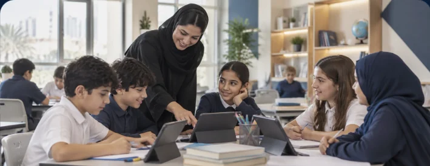
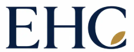
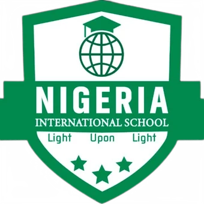
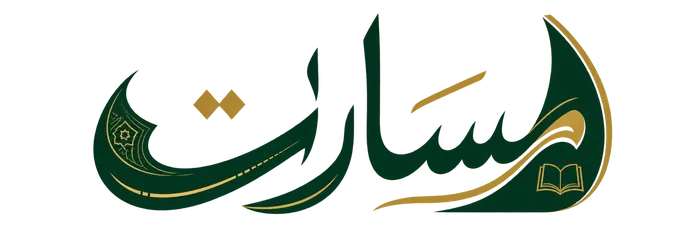
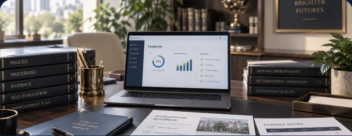
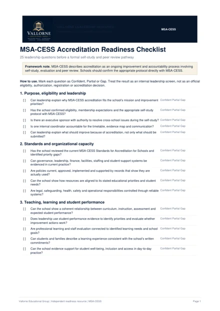
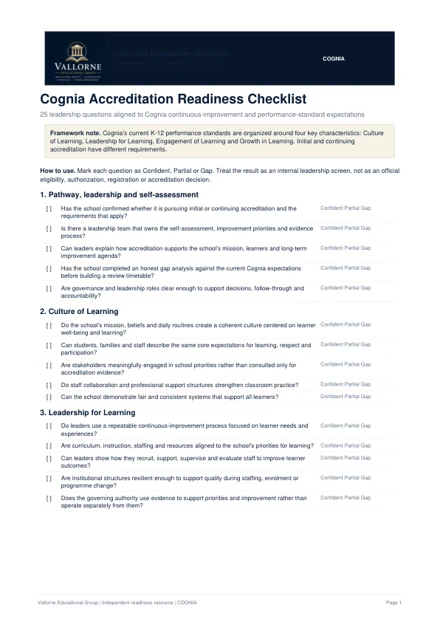
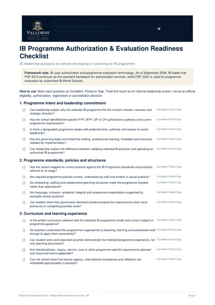
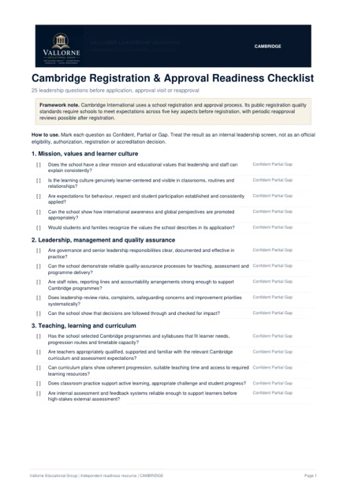

Private & international schools
Quality systems designed around the operating reality of GCC school groups and international-program environments.
Practical support for institutional quality, accreditation readiness, curriculum and school improvement, grounded in your school’s context, evidence and priorities.
UK-registered education consultancy and publishing company

English HubCape Town
Nigerian Int’l SchoolJeddah
Pathways PublishingStart with the problem leadership needs to solve. Vallorne scopes the right combination of evidence, systems and specialist support.
Self-evaluation, evidence systems and policy-to-practice review.
Framework-specific diagnostics, self-study facilitation and external-review preparation.
Alignment, scope and sequence, assessment coherence and programme establishment.
Priorities, ownership, KPIs and implementation support.
Documents alone do not make a school strong. We test whether the system exists, whether people use it, and whether the school can show that it works.
Is there a clear and appropriate written system?
Is it consistently implemented by the people responsible?
Can the school produce credible evidence that it works and is monitored?
The strongest imported frameworks work only when they are translated into the school’s real leadership, staffing, curriculum and regulatory environment.

Quality systems designed around the operating reality of GCC school groups and international-program environments.
Curriculum and evidence reviewed with local relevance and institutional sensitivity in mind.

Support for schools that already hold another accreditation and are considering an additional quality pathway.
Executive outputs prioritize decisions, owners, risk, evidence and next actions - not consultant jargon.
Schools do not all need the same level of support. Vallorne can begin with a focused diagnostic, deliver a defined review, manage accreditation preparation, or remain alongside leadership through a longer-term quality partnership.
A focused starting-point review that establishes evidence, risk, priorities and the appropriate next step.
A defined review of institutional quality, curriculum, operations, finance, workload or another agreed priority.
Structured support across the readiness cycle: gap closure, self-study facilitation, evidence governance, staff preparation and review readiness.
Renewable 12–36 month support for schools that want quality, curriculum coherence and improvement governance sustained beyond a single review or accreditation event.
Begin with a leadership conversation, establish the starting point where a diagnostic is useful, then agree a clear scope, owners and milestones.
Four independent Vallorne readiness tools built around each framework's own terminology and evidence logic.

Self-study, organizational capacity, improvement planning and peer-review readiness.
Download checklist
Culture, leadership, learner engagement, growth and continuous-improvement evidence.
Download checklist
Programme intent, implementation structures, professional learning and review readiness.
Download checklist
Registration quality, curriculum delivery, operational controls and approval-visit readiness.
Download checklistIndependent Vallorne resources. No accreditation, authorization or registration outcome is implied. Formal requirements and decisions remain with the relevant organization.
The practical questions schools usually ask before deciding whether an advisory engagement is useful.
No. Vallorne is an independent advisory service. Formal accreditation decisions remain with the relevant accrediting body.
Vallorne can structure, facilitate, quality-control and help draft from authentic school evidence, but the institution must own its evidence, decisions and implementation. That ownership is essential to a credible process.
Yes. Existing quality systems can be an asset. Vallorne identifies what can be mapped, retained or strengthened rather than discarding credible work already in place.
The timeline depends on the school’s starting point and the accreditor’s cycle. Vallorne scopes managed preparation around the actual readiness period rather than imposing one fixed duration.
Not necessarily. Vallorne works through existing leadership and staff using clear workstreams, owners, deadlines and evidence controls rather than creating a second bureaucracy.
Usually a leadership conversation followed, where appropriate, by a focused diagnostic. Establishing the real starting point before prescribing a large engagement protects both the school and the advisory relationship.
No. Vallorne adds structure, specialist capacity and independent perspective. School leadership remains accountable for institutional decisions and implementation.
Yes. The Embedded Quality Partnership provides renewable 12–36 month support for leadership teams that want improvement routines, evidence systems, curriculum coherence and institutional quality sustained over time.
Yes. Vallorne works in framework-aware international-school environments and reviews the school’s actual standards, programme architecture and implementation rather than applying one generic curriculum template. References to curriculum frameworks do not imply affiliation with their awarding organizations.
Yes. International frameworks are considered alongside the school’s national and regulatory requirements, local context and institutional priorities.
Yes. Scope can be limited to a nursery, elementary, middle or secondary division, a specific programme, or expanded to a whole-school review according to need.
Yes. Vallorne can support curriculum architecture, standards and progression mapping, assessment coherence, staffing and professional-learning planning, implementation review and programme quality assurance according to the school's context and chosen curriculum.
Yes. Vallorne can support programme design across grade bands, curriculum sequencing, assessment architecture, staffing and teacher coordination, implementation planning and ongoing quality assurance according to the school's needs.
A review establishes findings, priorities and recommendations within a defined scope. A managed engagement stays with the school through implementation, evidence development, readiness routines and agreed milestones.
Engagements are scoped according to the institution’s size, programme structure, starting point and level of support required. A clear scope and investment proposal is provided before work begins.
Yes. These can be commissioned as focused service applications or incorporated into a broader institutional review when they are relevant to the school’s strategic priorities.
Tell us your priorities. We will help define the right starting point and level of support.